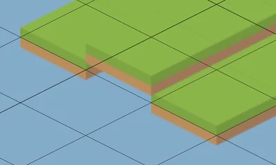
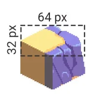

Create an isometric tilemap

Create isometric tilemaps, which use a 2D grid to simulate a 3D environment and create the illusion of height and depth.
There are two types of isometric tilemap in Unity:
- Isometric, where everything on a tilemap is at ground level. To create 3D height, you create a separate tilemap for each level.
- Isometric Z as Y, where you can set the 3D height position of tiles within a single tilemap.
Import isometric sprites
When you import a sprite or spritesheet texture, do the following:
Set Mesh Type to Tight, to avoid Unity drawing transparent pixels at the corners of the isometric tiles.
-
Set Pixels Per Unit (PPU) to the width of a tile in your texture in pixels. One unit is one cell in the tile palette and the tilemap, so setting the PPU to the width of a tile makes sure that the tile fits within a single cell.
If you set Pixels Per Unit (PPU) to a lower value, the tile expands beyond the width of a cell.
-
For each sprite in a texture, open the Sprite Editor window and set a custom Pivot at the center of the 3D floor of the tile, so the 3D sides of the sprite extend below a grid space on the tilemap. For more information, refer to Sprite Editor tab reference for the Sprite Editor window.

A floor of green isometric tiles. The tiles on the left and right have their pivot point set higher, so the ground aligns with the isometric tilemap cells.
Note: Isometric sprites have a diamond shape but you can slice them into rectangles as usual in the Sprite Editor.
If you enable collision for tiles, either enable Generate Physics Shape, or to create an isometric collider select the tile asset and set its Collider Type to Grid.
Create an isometric tile palette
To create a tile palette with an isometric grid, do the following:
From the main menu, select Assets > Create > 2D > Tile Palette.
Select Isometric.
In the Project window, select the created tile palette.
-
In the Inspector window, set the y value of the Cell Size property. To calculate the value, divide the height of the 3D floor of a tile in pixels by the width of a tile in pixels. The y value controls the height of the isometric diamond on the tile palette grid.

A tile with a 3D floor height of 32 pixels and a width of 64 pixels. The y value for Cell Size is 16 / 32 = 0.5. Note: The default Cell Size has a x value of 1 and a y value of 0.5. This is a ratio of 2 to 1, which is a common ratio for isometric tiles.
You can now add sprites to the tilemap and paint as normal. For more information, refer to paint tiles into the scene.
Create an isometric tilemap
When you create a tilemap, do the following:
Set its type to either Isometric Tilemap or Isometric Z as Y Tilemap. For more information, refer to Create 3D height on an isometric tilemap.
In the Inspector window, in the Grid component, set the y value of the Cell Size property so it matches the value you set in the tile palette.
-
In the 2D renderer asset, set the Transparency Sort Mode to Custom Axis, then set Transparency Sort Axis to 0, 1, 0. These values ensure Unity renders higher tiles behind lower tiles, to provide a sense of depth.
Note: This property has Transparency in its name because Unity renders 2D objects during the transparent render pass of the render pipeline.
Note: If your project uses the Built-In Render Pipeline, to set the Custom Axis values, select Edit > Project Settings > Graphics > Camera Settings.